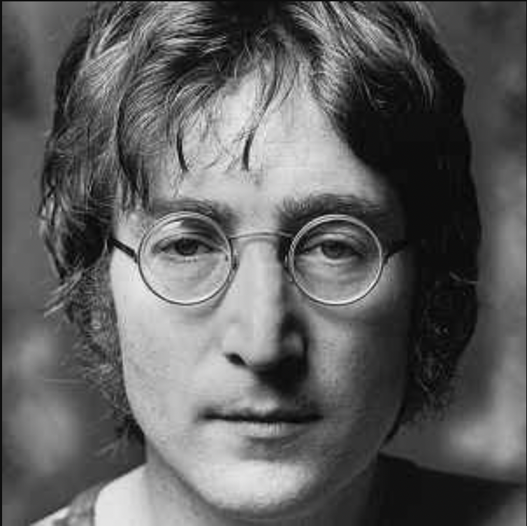
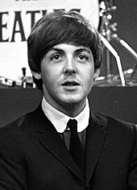
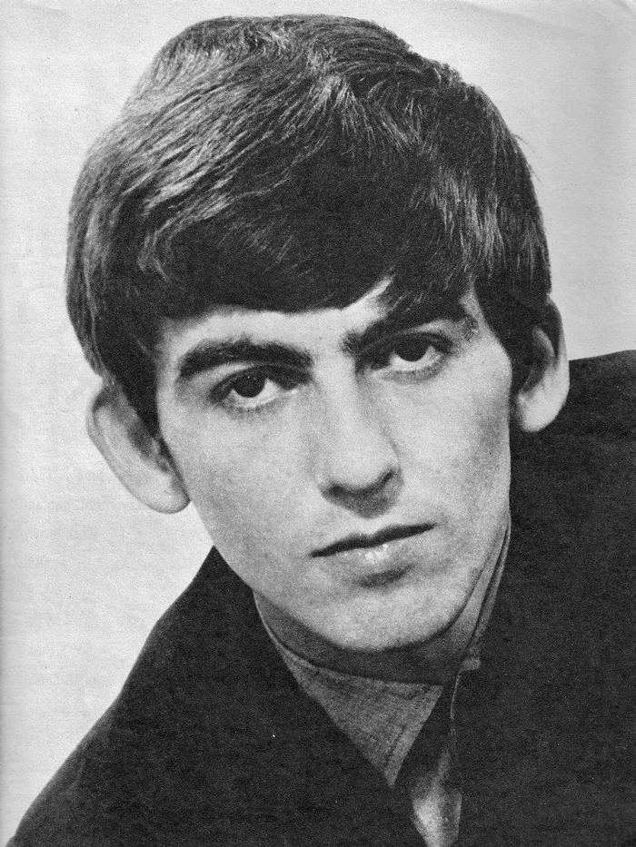
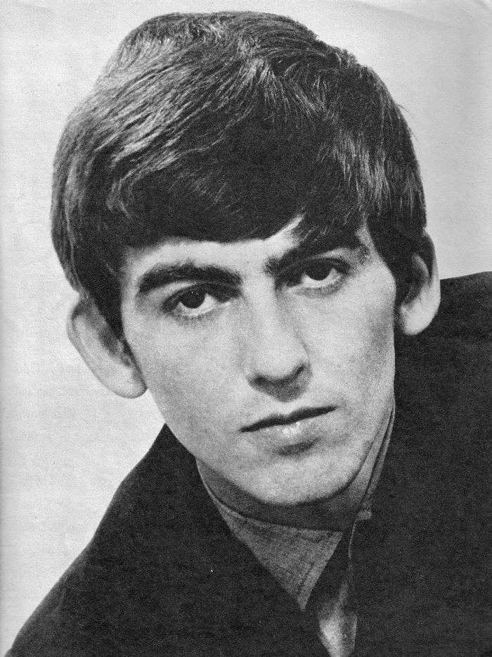

| Όνομα | Ιδιότητα |
|---|---|
| Τζον Λένον | Κιθάρα |
| Πολ ΜακΚάρτνεϊ | Μπάσο |
| Τζωρτζ Χάρισον | Κιθάρα |
| Ρίνγκο Σταρ | Τύμπανα |
Ο Τζον Γουίνστον Όνο Λένον (Αγγλικά: John Winston Ono Lennon) Λίβερπουλ, 9 Οκτωβρίου 1940 - Νέα Υόρκη, 8 Δεκεμβρίου 1980), γνωστός απλά ως Τζον Λένον, ήταν Άγγλος τραγουδιστής, κιθαρίστας, τραγουδοποιός και ιδρυτικό μέλος του συγκροτήματος των Beatles. Εκτός από την επιτυχημένη μουσική του σταδιοδρομία, διακρίθηκε επίσης ως ακτιβιστής του 20ού αιώνα, υιοθετώντας έντονη δράση σε κοινωνικά ζητήματα, ειδικότερα ως ηγετική μορφή του κινήματος ενάντια στον πόλεμο του Βιετνάμ. Η μουσική του επηρέασε πολλούς δημιουργούς και θεωρείται από τους πιο δημοφιλείς και πολυδιασκευασμένους τραγουδοποιούς. Ως μέλος των Beatles, τα τραγούδια του αποτέλεσαν αφορμή για τη δημιουργία μια παγκόσμιας κίνησης εκδήλωσης θαυμασμού που ονομάστηκε Beatlemania. Μετά τη διάλυση των Beatles ακολούθησε ατομική πορεία στη δισκογραφία. Ανάμεσα στις κορυφαίες δημιουργίες του ανήκει το τραγούδι Imagine καθώς και το Give Peace a chance. Δολοφονήθηκε από τον αυτο-αποκαλούμενο θαυμαστή του, Μαρκ Τσάπμαν στις 8 Δεκεμβρίου 1980.
Ο Σερ Πολ ΜακΚάρτνεϊ ΜΒΑ (Paul McCartney, 18 Ιουνίου 1942) είναι βραβευμένος Άγγλος τραγουδιστής, στιχουργός και συνθέτης, καθώς και χρισμένος ιππότης, ο οποίος κέρδισε παγκόσμια φήμη ως ένα από τα ιδρυτικά μέλη του μουσικού συγκροτήματος των Beatles. Κατέχει τον τίτλο του πιο εμπορικά επιτυχημένου τραγουδοποιού στην ιστορία της δημοφιλούς μουσικής, σύμφωνα με το Βιβλίο Γκίνες. Μαζί με τον Τζον Λένον έγραψαν τραγούδια τα οποία έχουν γίνει γνωστά σε ολόκληρο τον κόσμο. Μετά από την αποχώρησή του από τους Beatles, ο ΜακΚάρτνεϊ προώθησε μία επιτυχή σόλο σταδιοδρομία και διαμόρφωσε το μουσικό συγκρότημα "Wings" με τη σύζυγό του, Λίντα ΜακΚάρτνεϊ. Έχει ασχοληθεί επίσης με γυρίσματα ταινιών, με την κλασσική μουσική και την περιβαλλοντική/ηλεκτρονική μουσική καθώς επίσης έχει συμμετάσχει στα προγράμματα βοήθειας για τις διεθνείς φιλανθρωπίες. Μετά τον θάνατο της συζύγου του, Λίντα, ο Πολ ΜακΚάρτνεϊ ασχολείται με φιλανθρωπικές συναυλίες.
Ο Ρίτσαρντ Στάρκι (Richard Starkey, 7 Ιουλίου 1940), γνωστός ως Ρίνγκο Σταρ (Ringo Starr), είναι Άγγλος μουσικός, τραγουδιστής και ηθοποιός, περισσότερο γνωστός ως ντράμερ του μουσικού συγκροτήματος The Beatles. Γεννήθηκε στις 7 Ιουλίου του 1940 στο Λίβερπουλ της Αγγλίας. Πριν γίνει μέλος των Beatles το 1962, ήταν μέλος των Rory and The Hurricanes. Γιος του είναι ο τραγουδιστής Ζακ Στάρκι (γεννημένος το 1965). Είναι παντρεμένος με τη γνωστή από ταινία της σειράς Τζέιμς Μποντ ηθοποιό Μπάρμπαρα Μπαχ.Το 2018 χρίστηκε ιππότης από τη βασίλισσα και έγινε σερ. Τον Αύγουστο του 2019 εμφανίστηκε στο φεστιβάλ Woodstock 2019, για τα 50 χρόνια από το φεστιβάλ του Γούντστοκ του 1969.
Ο Τζωρτζ Χάρισον (αγγλικά: George Harrison, 25 Φεβρουαρίου 1943 - 29 Νοεμβρίου 2001) ήταν Άγγλος κιθαρίστας και τραγουδιστής του μουσικού συγκροτήματος The Beatles. Αν και τα περισσότερα τραγούδια του συγκροτήματος γράφτηκαν από τους Τζον Λένον και Πωλ ΜακΚάρτνεϋ, στα περισσότερα άλμπουμ υπήρχε τουλάχιστον μια σύνθεση του Χάρισον. Στη δεκαετία των 60s, ασχολήθηκε με το κίνημα Χάρε Κρίσνα και υπήρξε θαυμαστής του Ινδικού πολιτισμού και μυστικισμού, βοηθώντας στην εισαγωγή του στον Δυτικό κόσμο.
  

Επίσης υπήρξαν ανά περιόδους τα εξής μέλη:Πιτ Μπεστ, Νόρμαν Τσάπμαν, Στιούαρτ Σατκλιφφ ,Τόμι Μουρ, Κας Νιούμπι, Τζίμι Νίκολ.